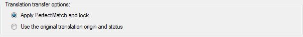

Perfect Match
The Perfect Match batch task copies pre-translated segments from previous versions of your files into the current project files. This chapter provides information on the settings that you can configure for this task and the parameters required to locate any previous file versions.
Configuring the Task Settings
The screenshot below shows the settings that can be configured for the Perfect Match task in Trados Studio.

To configure the task settings programmatically, implement a helper function called GetPerfectMatchTaskSettings, which takes a FileBasedProject object as a parameter. The settings for a particular task are saved within the project. First, create a ISettingsBundle object by applying the GetSettings method to the project object. Then apply the GetSettingsGroup method to generate a settings object based on the PerfectMatchTaskSettings class:
ISettingsBundle settings = project.GetSettings();
PerfectMatchTaskSettings perfectMatchSettings = settings.GetSettingsGroup<PerfectMatchTaskSettings>();
Afterwards, you configure the task-specific settings as follows:
Setting the target segment status after Perfect Match
By default when a perfect match is found and copied the segment is marked as Perfect Matched and locked so that if cannot be edited further To override this behaviour and copy the perfect match segments without changing their status set the MarkAsPerfectMatchAndLock property to false.
For now we will assign the default behaviour of true so that the segments are marked as Perfect match and locked.
perfectMatchSettings.MarkAsPerfectMatchAndLock.Value = true;
Last, you need to apply the settings to the project through the UpdateSettings method, so that the settings are persisted in the project.
project.UpdateSettings(settings);
Putting it All Together
The function should look as shown below:
public void GetPerfectMatchTaskSettings(FileBasedProject project)
{
#region "PerfectMatchTaskSettings"
ISettingsBundle settings = project.GetSettings();
PerfectMatchTaskSettings perfectMatchSettings = settings.GetSettingsGroup<PerfectMatchTaskSettings>();
#endregion
#region "MarkAsPerfectMatchAndLock"
perfectMatchSettings.MarkAsPerfectMatchAndLock.Value = true;
#endregion
#region "UpdateTaskSettings"
project.UpdateSettings(settings);
#endregion
}
Segments shown in the Trados Studio editor after Perfect Match

Mapping Previous Bilingual Files to Project Files
For Perfect Match to work the files in your project must each hold a reference to a previous bilingual file The IProject interface contains a number of methods for assigning and removing these association to and from your project files.
AddBilingualReferenceFiles - Maps bilingual reference files using an array of BilingualFileMapping objects.
AddBilingualReferenceFile - Uses a BilingualFileMapping object to map a bilingual reference file to a project file for a particular target language.
RemoveBilingualReferenceFile - Removes the bilingual reference file from a file.
Examples of using the AddBilingualReferenceFiles method
ProjectInfo info = this.GetProjectInfo();
ProjectFile[] files = project.AddFiles(this.AddProjectFiles(@"c:\ProjectFiles\Documents\"));
//Using a helper function to return an array of BilingualFileMappings which are added to the project
project.AddBilingualReferenceFiles(GetBilingualFileMappings(info.TargetLanguages, files, @"c:\ProjectFiles\PreviousProjectFiles"));
//Assigning one or more reference files manually
project.AddBilingualReferenceFiles(
new BilingualFileMapping[] {
new BilingualFileMapping(files[0].Id, new Language("fr-FE"), @"c:\ProjectFiles\PreviousProjectFiles\fr-FR\mydocument.docx.sdlxliff"),
new BilingualFileMapping(files[0].Id, new Language("de-DE"), @"c:\ProjectFiles\PreviousProjectFiles\de-DE\mydocument.docx.sdlxliff"),
new BilingualFileMapping(files[1].Id, new Language("fr-FE"), @"c:\ProjectFiles\PreviousProjectFiles\fr-FR\myotherdocument.docx.sdlxliff"),
});
Example helper method to return an array of BilingualFileMapping objects
This example uses a simple scan of a previous project to find and associate bilingual files with the current project using a simple match of the language directory and filename.
/// <summary>
/// Simple mapping routine to associate bilingual files in a previous project with the file in the current project
/// Looks for a bilingual file with the same name in the relevant language directories
/// </summary>
/// <remarks>
/// This routine is provided as a basic example of mapping previous documents to current documents. If a more complicated mapping
/// is required (perhaps different versions have a version number in the filename) then you can build in your own rules to do this.
///
/// Example:
/// languages = { "fr-FR", "de-DE" }
/// files = { "file1.docx", "file2.docx" }
/// PreviousProjectPath = "C:\Projects\MyOldProject"
///
/// This routine will look for and associate the following files as bilingual reference files if present
/// "c:\Projects\MyOldProject\fr-FR\file1.docx.sdlxliff"
/// "c:\Projects\MyOldProject\fr-FR\file2.docx.sdlxliff"
/// "c:\Projects\MyOldProject\de-DE\file1.docx.sdlxliff"
/// "c:\Projects\MyOldProject\de-DE\file2.docx.sdlxliff"
/// </remarks>
/// <param name="targetLanguages">An array of target languages</param>
/// <param name="translatableFiles">An array of project files </param>
/// <param name="previousProjectPath">The root directory of the previous Trados Studio Project</param>
public BilingualFileMapping[] GetBilingualFileMappings(Language[] targetLanguages, ProjectFile[] translatableFiles, string previousProjectPath)
{
List<BilingualFileMapping> mappings = new List<BilingualFileMapping>();
foreach (Language language in targetLanguages)
{
string searchPath = Path.Combine(previousProjectPath, language.IsoAbbreviation);
foreach (ProjectFile file in translatableFiles)
{
string previousFile = String.Concat(Path.Combine(searchPath, file.Name), (file.Name.EndsWith(".sdlxliff") ? "" : ".sdlxliff"));
if (File.Exists(previousFile))
{
BilingualFileMapping mapping = new BilingualFileMapping()
{
BilingualFilePath = previousFile,
Language = language,
FileId = file.Id
};
mappings.Add(mapping);
}
}
}
return mappings.ToArray();
}
Examples of using the AddBilingualReferenceFile method
Single bilingual reference file associations can be made using on of the following methods
//Add a single reference file using a BilingualFileMapping Object
project.AddBilingualReferenceFile(new BilingualFileMapping(FileIdFromOriginalSourceFile, new Language("fr-FR"), @"c:\ProjectFiles\PreviousProjectFiles\fr-FR\mydocument.docx.sdlxliff"));
Calling Perfect Match as a Single Task
After you have prepared a project and run the CopyToTargetLanguages task the target language files are available and you can assign bilingual reference files directly to the target files to be used in Perfect Match.
Alternatively can set up the bilingual reference files using the original documents before you prepare the project and the references will be picked up and copied to the target files when the CopyToTargetLanguages task is run.
Example of calling Perfect Match on a previously prepared project where the target files are available
Language targetLanguage = new Language(CultureInfo.GetCultureInfo(locale));
ProjectFile[] targetFiles = project.GetTargetLanguageFiles(targetLanguage);
project.AddBilingualReferenceFiles(GetBilingualFileMappings(new Language[] { targetLanguage }, targetFiles, @"c:\ProjectFiles\PreviousProjectFiles"));
AutomaticTask perfectMatchTask = project.RunAutomaticTask(
targetFiles.GetIds(),
AutomaticTaskTemplateIds.PerfectMatch);
Calling Perfect Match as Part of a Task Sequence
Perfect Match can be run as part of a batch task sequence and is included in the standard prepare sequence. Before you prepare the project you do not have access to the source or target bilingual files however the AddBilingualReferenceFiles methods will accept the original documents as parameters.
The bilingual file association will be copied to the target document when it is copied to the target language as part of the task sequence.
public void RunPrepareWithPerfectMatch()
{
ProjectInfo info = this.GetProjectInfo();
//Create the project
FileBasedProject newProject = new FileBasedProject(info);
//Add project files
ProjectFile[] files=newProject.AddFiles(this.AddProjectFiles(@"c:\ProjectFiles\Documents\"));
//Perfect Match Setup - Use the helper function to look for files in a previous project that match files in this project
newProject.AddBilingualReferenceFiles(GetBilingualFileMappings(info.TargetLanguages, files, @"c:\ProjectFiles\PreviousProjectFiles"));
//Add Translation memory
this.AddMasterTMs(newProject, @"c:\ProjectFiles\TMs\");
//Run the prepare task sequence (Scan, ConvertToTranslatableFormat, WordCount, CopyToTargetLanguages, PerfectMatch, AnalyzeFiles, PreTranslateFiles, PopulateProjectTranslationMemories)
TaskSequence taskSequence = newProject.RunAutomaticTasks(files.GetIds(), TaskSequences.Prepare);
}
See Also
Update Translation Memory Settings